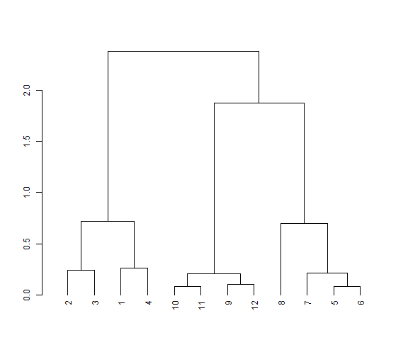
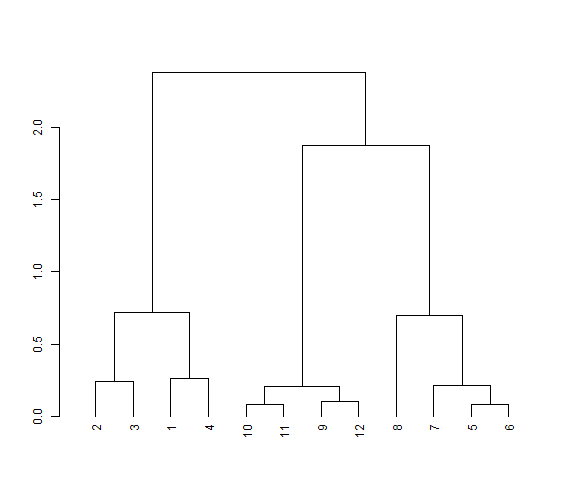
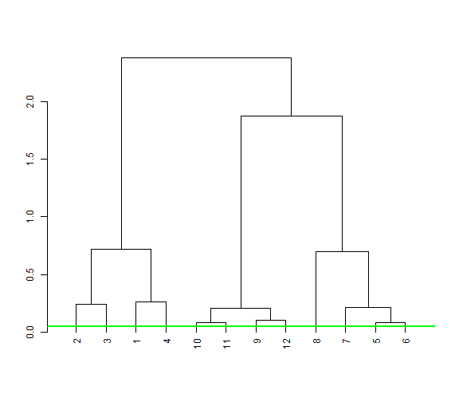
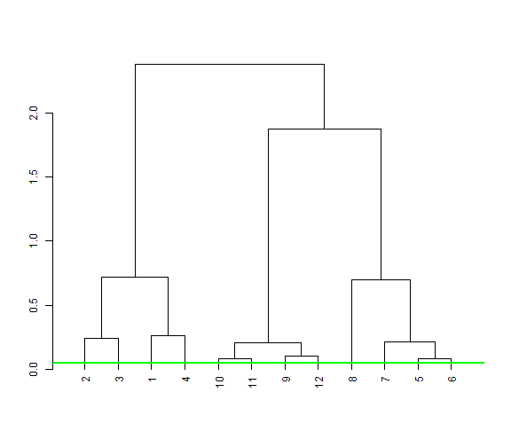

Part 1: Theoretical Machine Learning
Machine learning:
- Takes knowledge as input
- Receives parameter settings
- ??? (Magic)
- Produces knowledge as output
A machine learning system is a function \(L\) that, given some input knowledge \(I \in \mathcal{I}\) and parameter settings \(p \in P\), produces an output called a model or hypothesis \(O \in \mathcal{O}\): \[\mathcal{L}: \mathcal{I} \times \mathcal{P} \rightarrow \mathcal{O}\]
BUT FIRST... Get to know your data!
It is bad practice to apply machine learning on a dataset you don't know!


 



 
